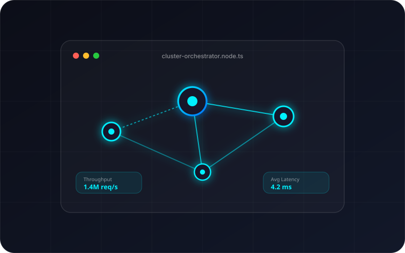
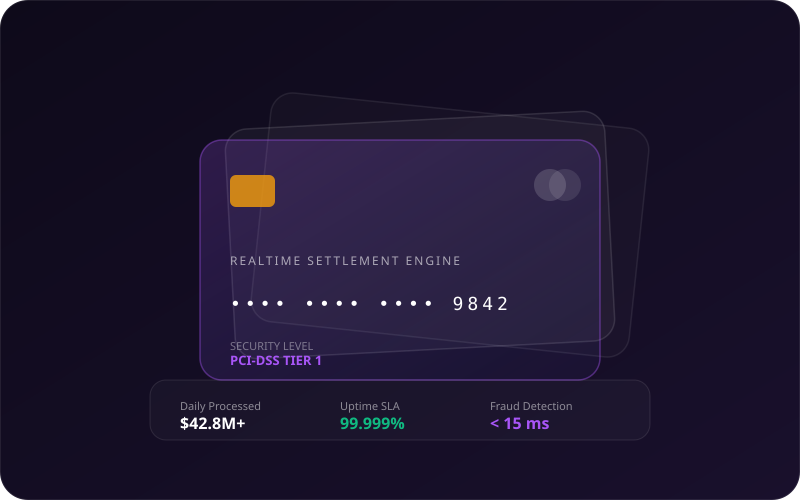
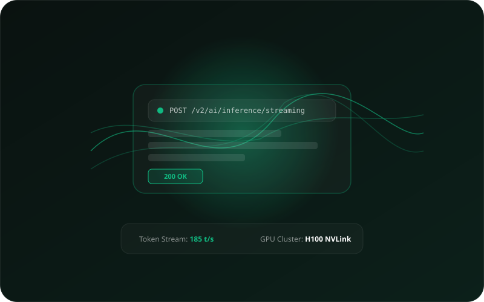

Mesh Orchestrator
Plataforma de orquestração de microsserviços com service mesh, roteamento inteligente e tolerância automática a falhas.
Vazão Máxima
1.4M req/segundo
Olá, sou Marcos Aurélio. Desenvolvo sistemas distribuídos resilientes, APIs de alta vazão e interfaces modernas com foco obsessivo em performance, arquitetura limpa e experiência do usuário.
Um ecossistema arquitetural concebido para estabilidade, escalabilidade e manutenibilidade a longo prazo.
Estruturas modulares, tipos estritos e padrões expressivos diretamente da IDE.
interface SoftwareEngineer {
name: string;
role: string;
specialties: string[];
executeTask(task: EngineeringGoal): Promise<ProductionReadyService>;
}
export class Marcos_Aurélio implements SoftwareEngineer {
public readonly name = "Marcos Aurélio";
public readonly role = "Fullstack & Distributed Systems Engineer";
public readonly specialties = ["Clean Architecture", "High Throughput", "Zero Downtime"];
async executeTask(goal: EngineeringGoal): Promise<ProductionReadyService> {
// 1. Análise profunda de requisitos e arquitetura de dados
const spec = await ArchitecturePlanner.design(goal);
// 2. Ciclo rigoroso de TDD (Test-Driven Development)
await AutomatedTesting.ensureReliability(spec);
// 3. Deploy contínuo resiliente e monitoramento ativo
return DeploymentPipeline.shipWithObservability(spec);
}
}{
"system": "Global Distributed Core",
"version": "6.4.2",
"runtime": "Node.js 22 LTS / Linux Container",
"clusters": [
{ "region": "us-east-1", "status": "healthy", "latency": "12ms" },
{ "region": "sa-east-1", "status": "healthy", "latency": "4ms" }
],
"security": {
"mTLS": true,
"jwt_rotation": "24h",
"rate_limit": "10000 req/sec"
}
}#!/usr/bin/env bash
echo "== Running Performance Load Stress Test =="
k6 run --vus 5000 --duration 60s load-test.js
# Results:
Requests: 1,420,000 reqs
Failed: 0 (0.00%)
p95 Latency: 4.8ms
✔ Status: PASS - Ready for global deploymentSoluções arquitetadas com foco em escalabilidade de milhões de usuários e experiência impecável.

Plataforma de orquestração de microsserviços com service mesh, roteamento inteligente e tolerância automática a falhas.

Motor de liquidação financeira e prevenção de fraudes em tempo real com conciliação contábil automatizada.

Gateway de inferência de modelos LLM em cluster de GPUs com balanceamento adaptativo e streaming bidirecional com baixa latência.
Entre em contato para discutir novos projetos, consultoria técnica ou oportunidades.